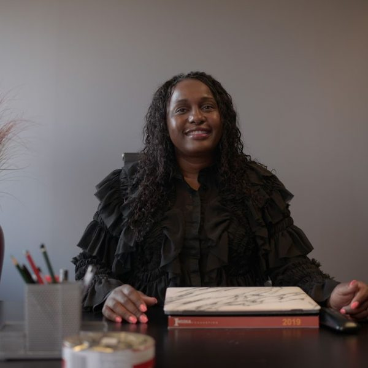

About Gabsie
Insika Foundation was started by Ziphozethu Busisiwe Mathenjwa, affectionately known as 'Gabsie' to partners, beneficiaries, participants, employers and staff who work with the Insika Foundation. Gabsie started as a water scientist and evolved into an all rounded business person with a love and empathy for South African communities and a desire to connect business, government, and the community through social projects designed to provide skills that yield maximum impact to create sustainable livelihoods.
Gabsie grew up in the small town of Eshowe and observed social challenges on the side of both her paternal (Emanyiseni) and maternal (Mbongolwane) grandmothers' homesteads. This ignited in Gabsie a desire to assist in the upliftment of her community, motivating her to become an agent of change.